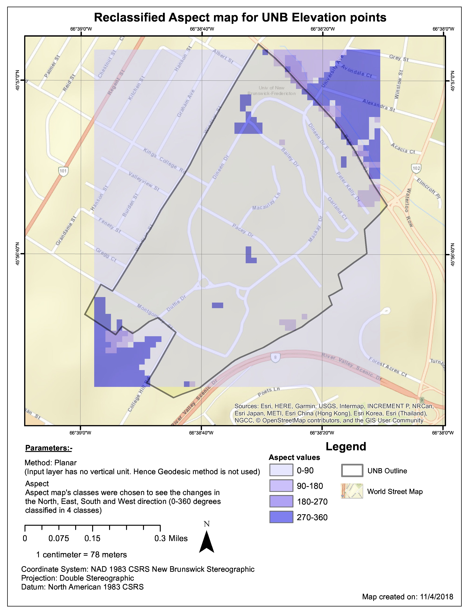
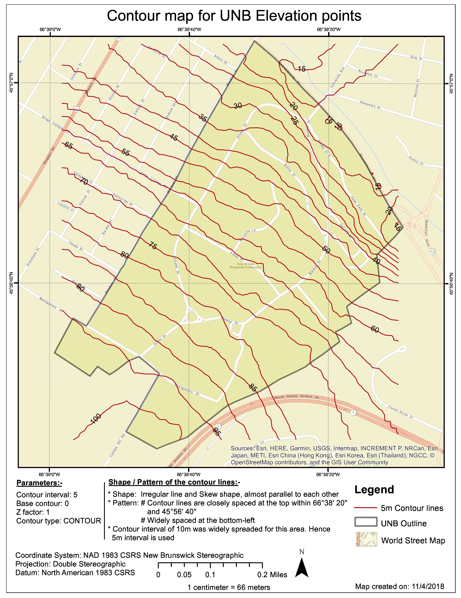

Interactive Web Maps:
Fredericton: KnowYourRoute
NewBrunswick: Renewable Site Assessment
Malawi: CholeraSpatialEpidemiology
Agaram Village in Tamilnadu, India
Standard Map Products: Created using ESRI products (ArcGIS pro, ArcMap), QGIS
28. Stop Motion Animation
#ESRI_MOOC_Cartography #2021

27. 2D Animation through time
#ESRI_MOOC_Cartography #2021
26. Fly Through Animation
#ESRI_MOOC_Cartography #2021

25. Small Multiples
#ESRI_MOOC_Cartography #2021

24. Taming Typography
#ESRI_MOOC_Cartography #2021

23. World Oceans Map
#ESRI_MOOC_Cartography #2021
22. Map of Massachusettes showing Highways
#ESRI_MOOC_Cartography #2021
21. Heatmap displaying accident statistics for Edmonton
#UNB #ESRI2020_Calendar_Contest_Submission #2019
20. 1854 Cholera Outbreak (Analysis first done by John Snow)
#UNB #GGE4423 #2019

19. Odellpark Layout
#UNB #GGE4423 #2019

18. Reclassified Aspect map showing UNB Elevation points
#UNB #GGE3423 #2018

17. Aspect map showing UNB Elevation points
#UNB #GGE3423 #2018
16. Slope map showing UNB Elevation points
#UNB #GGE3423 #2018
15. Contour map showing UNB Elevation points
#UNB #GGE3423 #2018

14. Vector analysis
#UNB #GGE3423 #2018
13. Vector analysis
#UNB #GGE3423 #2018
12. Georeferncing
#UNB #GGE3423 #2018
11. Projection
#UNB #GGE3423 #2018
10. Projection
#UNB #GGE3423 #2018
9. Projection
#UNB #GGE3423 #2018

8. Buffer Analysis
#UNB #GGE3423 #2018

7. Buffer Analysis
#UNB #GGE3423 #2018
6. NB Map Flooded Areas
#UNB #GGE3423 #2018
5. Contour Map using GRASS GIS
#CEG #2018
4. Tezpur Project site points for Seismic codaQback computation
#CEG #2017 #SRFP
3. Finding Suitability Area
#CEG #2017

2. Delineation
#CEG #2017
1. Watershed Delineation
#CEG #2017